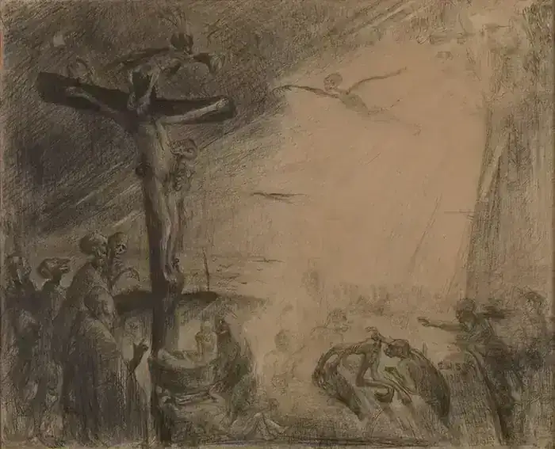
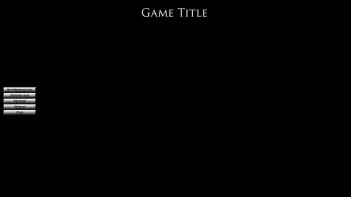
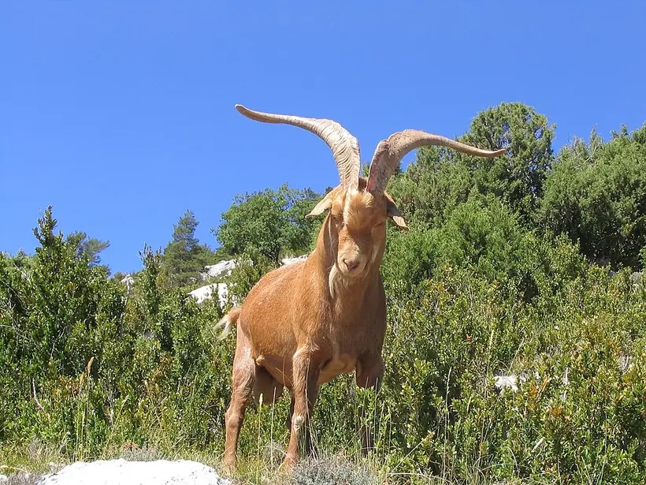

The story
In 2015 a YouTube channel described a horror game called Sad Satan, supposedly found on the deep web, containing disturbing imagery and hidden material. The videos were unsettling and the story spread quickly.
Maps, diagrams and images






The game files were later distributed and examined. They contain crude assets, distorted imagery and audio, and references that appear to be assembled from other sources. Several analyses found no evidence of the illegal content claimed, and the authorship remains unknown.
What it is
The most plausible reading is that Sad Satan is an art project or a hoax built to generate exactly the reaction it generated: a disturbing file, an untraceable origin, and a story about what it might contain. That is not a debunking of the file's existence — it exists — but of the claims about its contents.
Documented: the game, the videos, and the circulation of the files.
Examined: by several people, who found no illegal material.
Unknown: who made it, and why.
Not established: the deep-web provenance and the content claims.
The honest label: live debate — a real artefact with a manufactured mystery around it.
Why it is in the archive
Because it is the purest example of a creepypasta that produced a physical artefact, and because the artefact was less interesting than the story told about it.
Open resources on this topic
- BookDesmistificando Creepypastas: Sad Satan — Natanael Monteiro · 2016 (Internet Archive, free to read)
- PapersOpen-access articles: DOAJ · PubMed Central · Internet Archive Scholar
- BooksPublic-domain and borrowable copies: Open Library · Project Gutenberg · Google Books
Cite this page
Momin, S. (2026). Sad Satan. The Larger World Archive. https://drsamonline.github.io/LARGE_GLOBE/sad-satan.htmlMomin, Sohil. “Sad Satan.” The Larger World Archive, 2026, https://drsamonline.github.io/LARGE_GLOBE/sad-satan.html.Momin, Sohil. “Sad Satan.” The Larger World Archive, 2026. https://drsamonline.github.io/LARGE_GLOBE/sad-satan.html.@misc{sad2026sad,
author = {Momin, Sohil},
title = {Sad Satan},
year = {2026},
howpublished = {The Larger World Archive},
url = {https://drsamonline.github.io/LARGE_GLOBE/sad-satan.html},
note = {Last reviewed 20 November 2026}
}Last reviewed 20 November 2026 · Corrections policy · this page is not peer reviewed
Sources for this page
- Wikipedia, “Sad Satan” — the game and the claimsen.wikipedia.org
- Wikipedia, “Creepypasta” — the genreen.wikipedia.org
- Wikipedia, “Deep web” — what the term meansen.wikipedia.org
- Wikipedia, “Art game” — a plausible category for iten.wikipedia.org